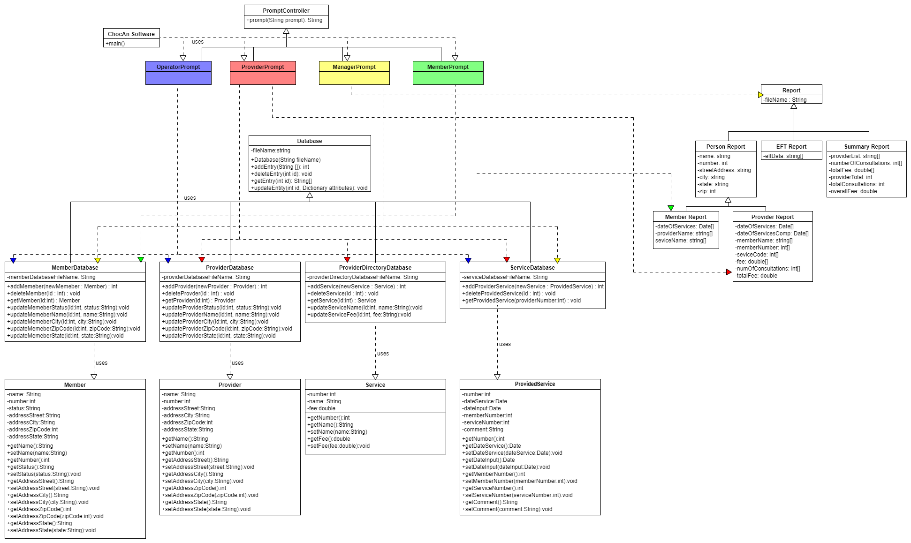
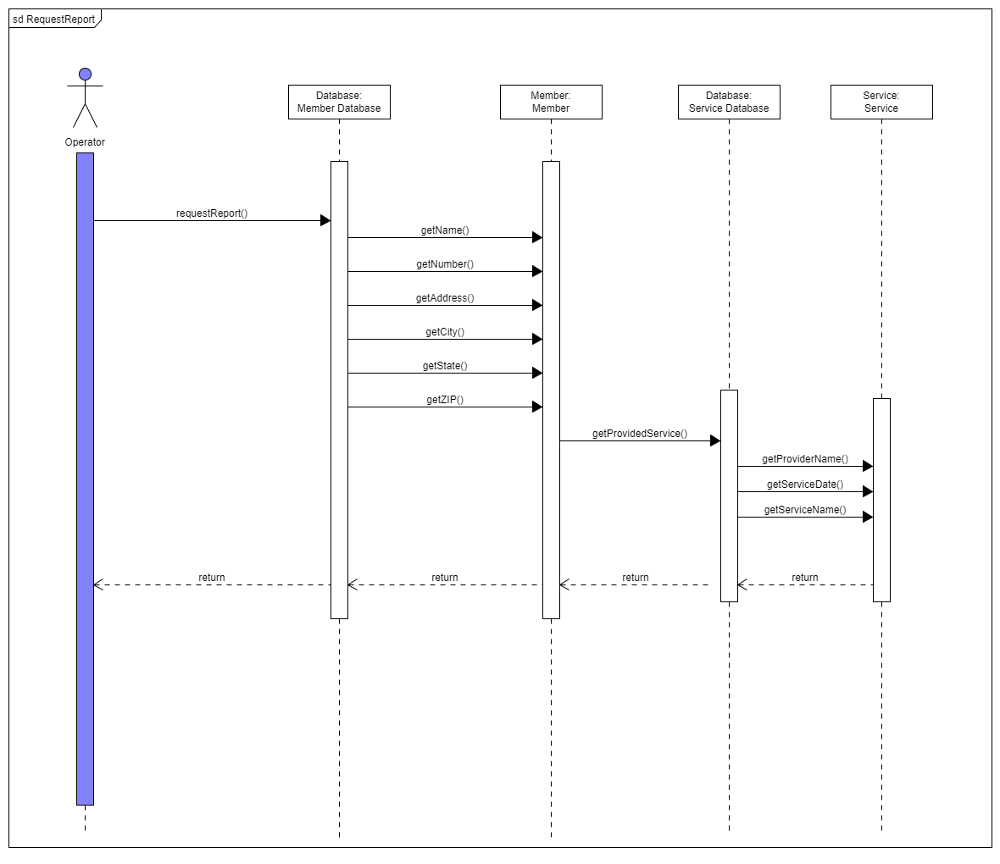
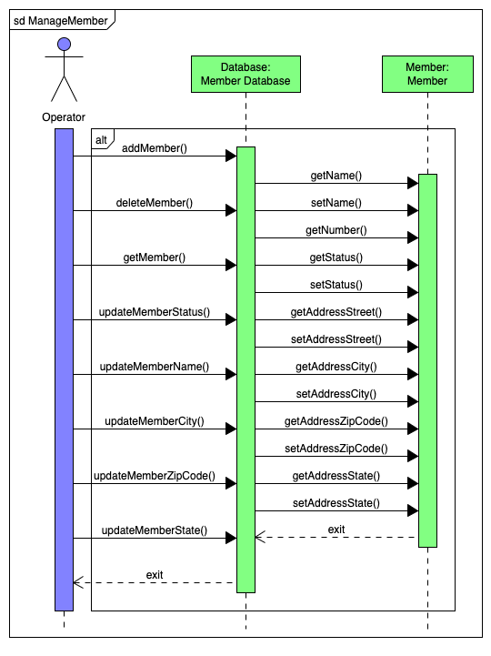
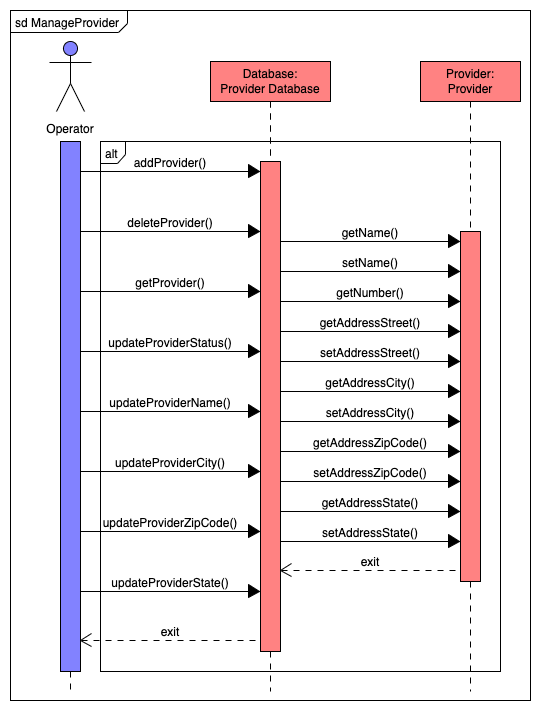
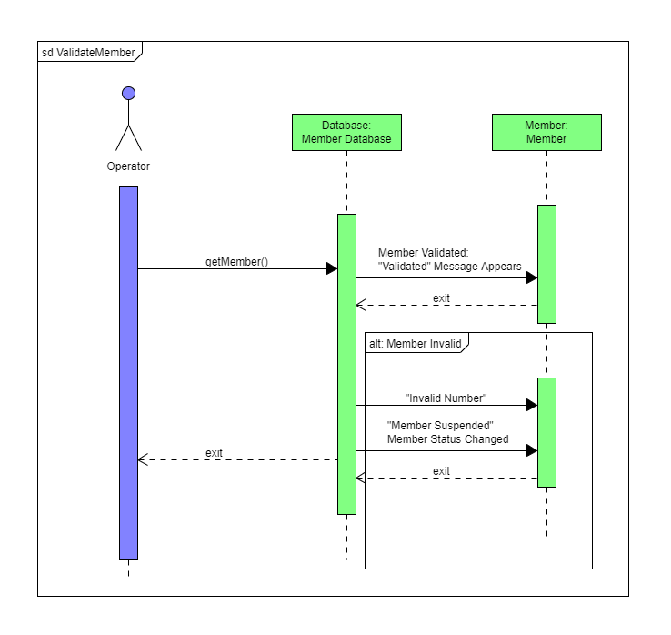
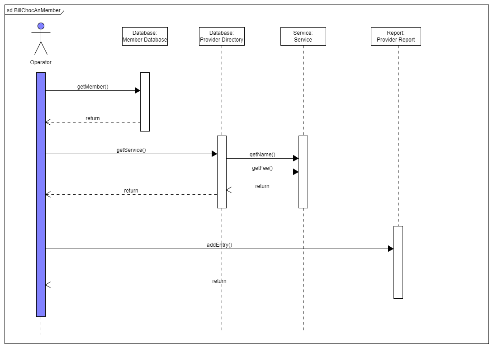
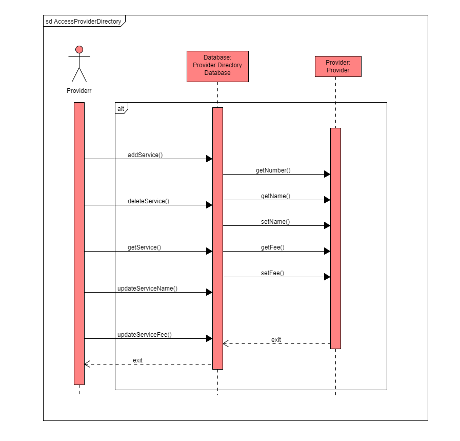

| Name |
CWID Number |
Crimson Email |
Hours Committed |
| Luca Conti |
11856871 |
lconti1@crimson.ua.edu |
2 |
| William Jefferson |
11930076 |
wtjefferson@crimson.ua.edu |
2 |
| Jacob Aid |
11950741 |
jiaid@crimson.ua.edu |
2 |
| Shanissee Lee |
12100396 |
srlee2@crimson.ua.edu |
2 |
| Caroline Johnson |
12100578 |
chjohnson9@crimson.ua.edu |
2 |
| TJ Trueblood |
12075410 |
tbtrueblood@crimson.ua.edu |
2 |
| Name |
Task Performed |
Percent Contributed |
| Luca Conti |
Complete Class Diagram |
20% |
| William Jefferson |
Complete Class Diagram |
20% |
| Jacob Aid |
UML Sequence Diagrams |
15% |
| Shanissee Lee |
Paragraph on Cohesion and Coupling |
15% |
| Caroline Johnson |
UML Sequence Diagrams |
15% |
| TJ Trueblood |
UML Sequence Diagrams |
15% |

Complete Class Diagram

UML Sequence Diagrams
1. Request Report

2. Run Main Accounting Procedure

3. Manage Member

4. Manage Provider

5. Validate Member

6. Bill ChocAn Member

7. Access Provider Directory

Paragraph
Our system's design is good because it implements key aspects of quality modules, through high cohesion and low coupling.
The classes we used demonstrate informational cohesion, meaning methods performed operate on the same information or data.
Additionally, the classes have low or zero dependency on one another, making the coupling low. The lower coupling will allow easier debugging of our system.
Overall, our design implements good design practices into the ChocAn system, alllowing for future alterations and maintainability.